10/12/2019 — Thiếu niên đau ngực và troponin tăng nhẹ. Rồi chuyện gì xảy ra?
Bản dịch tiếng Việt của bài "Teenager with chest pain and slightly elevated troponin. What happens then?" – Dr. Smith’s ECG Blog. Giữ nguyên toàn bộ 14 hình ảnh của bản gốc.
Đây là một nam thiếu niên trước đó khỏe mạnh, bị đánh thức giữa giấc ngủ vì đau ngực. Bệnh nhân được khám tại một bệnh viện khác và phát hiện troponin tăng nhẹ, sau đó được chụp CT mạch phổi theo quy trình thuyên tắc phổi (PE), kết quả cho thấy viêm phổi bên phải. Bệnh nhân được điều trị bằng ceftriaxone và azithromycin.
Cơn đau được mô tả ở vùng giữa xương ức, lan ra cánh tay phải, mức độ 8-9/10 và tăng lên khi hít sâu. Bệnh nhân xác nhận có ho, sốt và đau mỏi toàn thân trong những ngày trước đó.
Đây là điện tâm đồ ban đầu:
Mốc thời gian ban đầu (time zero):

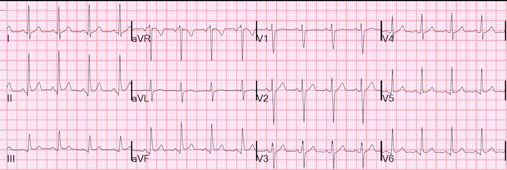
Có đoạn PR chênh xuống: xem đặc biệt ở chuyển đạo II và V5.
Đoạn ST không chênh lên so với đoạn TP, nhưng chênh lên so với điểm khởi đầu QRS.
Điểm khởi đầu QRS là vị trí tốt nhất để so sánh đoạn ST, và là vị trí được khuyến cáo bởi Định nghĩa toàn cầu về nhồi máu cơ tim. Vì sao?
Đoạn PR chênh xuống là do sóng tái cực nhĩ âm. Sóng này vẫn còn gây ra điểm J chênh xuống, nên lẽ ra phải có điểm J chênh xuống so với đoạn TP.
Nhưng ở đây điểm J KHÔNG chênh xuống, vì vậy thực ra là có ST chênh lên.
Không có ST chênh xuống soi gương ở aVL.
Xem tại đây phần giải thích về sóng tái cực nhĩ. Điện tâm đồ này khá điển hình cho viêm cơ-màng ngoài tim (myopericarditis), và phù hợp với hội chứng lâm sàng.
Điện tâm đồ này ban đầu được đọc là bình thường, và bác sĩ tim mạch không lo ngại.
Troponin I lần đầu trả về 0.081 ng/mL (giới hạn trên tham chiếu (URL) là 0.030).
Bệnh nhân được nhập viện.
Troponin I lần thứ hai trả về 0.122 ng/mL.
Một điện tâm đồ khác được ghi lúc 4 giờ và về cơ bản không thay đổi.
Vào buổi tối, bệnh nhân vã mồ hôi và than đau ngực liên tục mức 9/10. Điện tâm đồ này được ghi lúc 16 giờ:

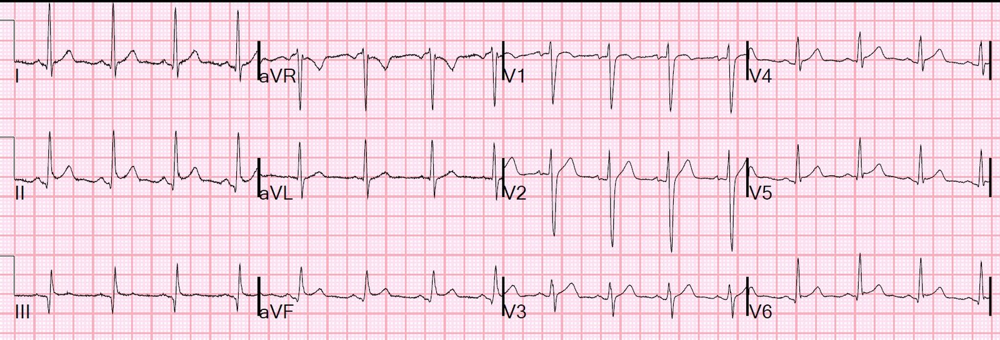
Kết quả đọc này đã kích hoạt đội phản ứng nhanh. Nhóm nhi khoa cho rằng có thể là hội chứng vành cấp (ACS), nhưng khi xem lại các điện tâm đồ trước đó, họ cho rằng nó thực sự không thay đổi so với 2 điện tâm đồ trước và phù hợp hơn với viêm cơ tim.
Troponin I trả về 9.3 ng/mL, rồi 13.65 ng/mL.
Sáng hôm sau, bệnh nhân vẫn còn đau ngực nhiều hơn, và được ghi điện tâm đồ này:
25 giờ

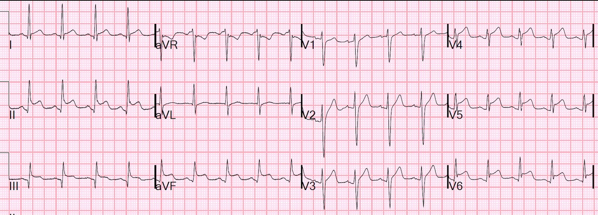
Các sóng Q ở thành dưới vẫn còn.
Giờ đây có ST chênh lên rõ rệt ở các chuyển đạo dưới-bên.
Sóng T không cao hơn nhiều so với mức ST chênh lên (STE), điển hình của viêm cơ-màng ngoài tim.
ST chênh xuống (STD) duy nhất là ở aVR, cũng điển hình của viêm cơ-màng ngoài tim.
Troponin trả về 9.45 ng/mL.
Siêu âm tim cấp cứu được thực hiện và cho thấy rối loạn vận động thành ở đoạn xa vách liên thất và thành trước.
Siêu âm tim không nhất thiết phân biệt được nhồi máu cơ tim cấp với viêm màng ngoài tim: cả hai đều có thể có rối loạn vận động thành.
Có một hình ảnh CT ngực từ ngày hôm trước.

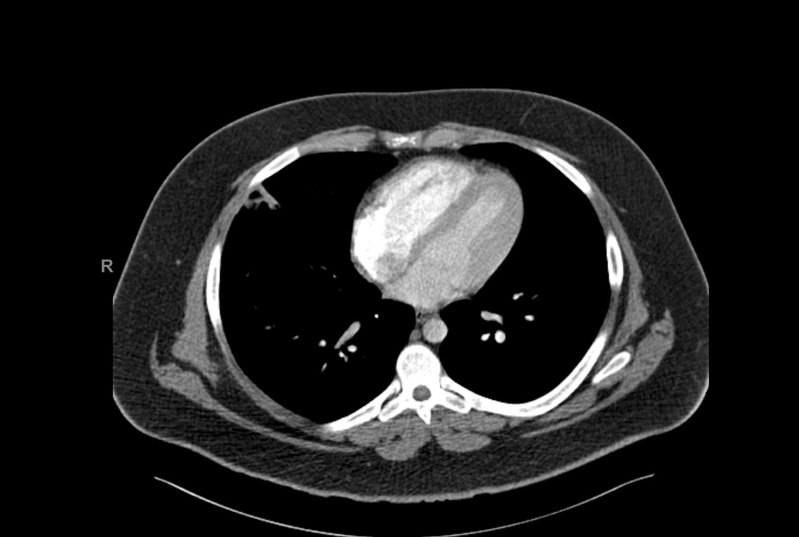
Không nên dựa vào một phim CT âm tính để loại trừ thiếu máu cục bộ. Tuy nhiên, nếu có một vùng giảm tưới máu thì giá trị tiên đoán dương sẽ tốt. Xem các ví dụ về thiếu máu cục bộ trên CT tại đây.
Một lần troponin khác trả về 23.89 ng/mL.
Đây là diễn biến troponin:

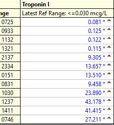
Bệnh nhân được chụp MRI. Một lần nữa xin cảm ơn Dr. Punjabi về những hình ảnh và lời giải thích này:

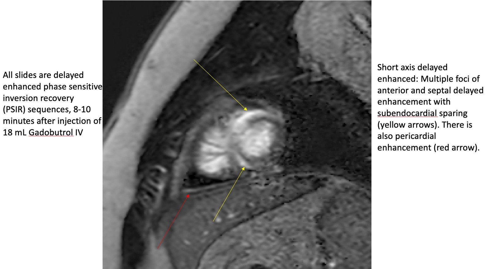

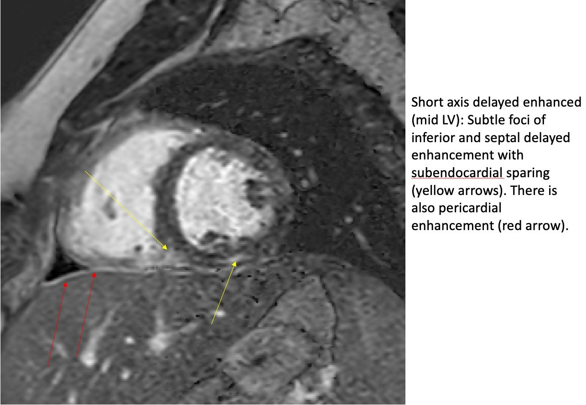

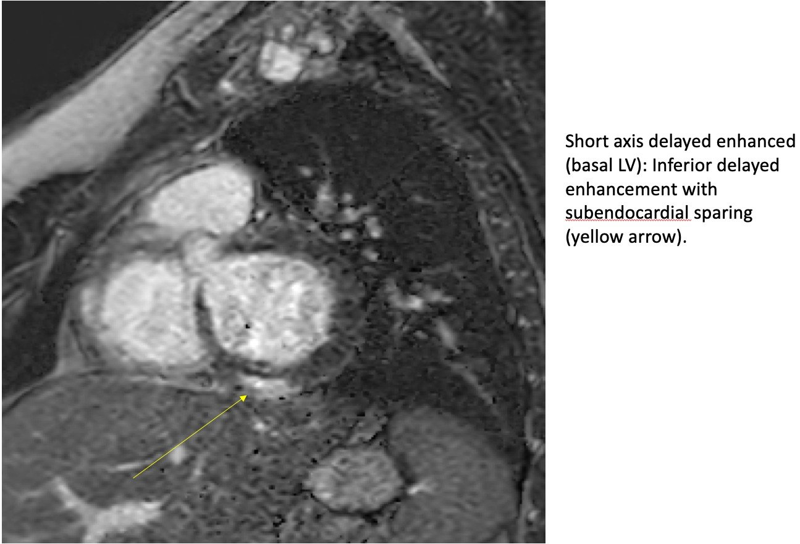

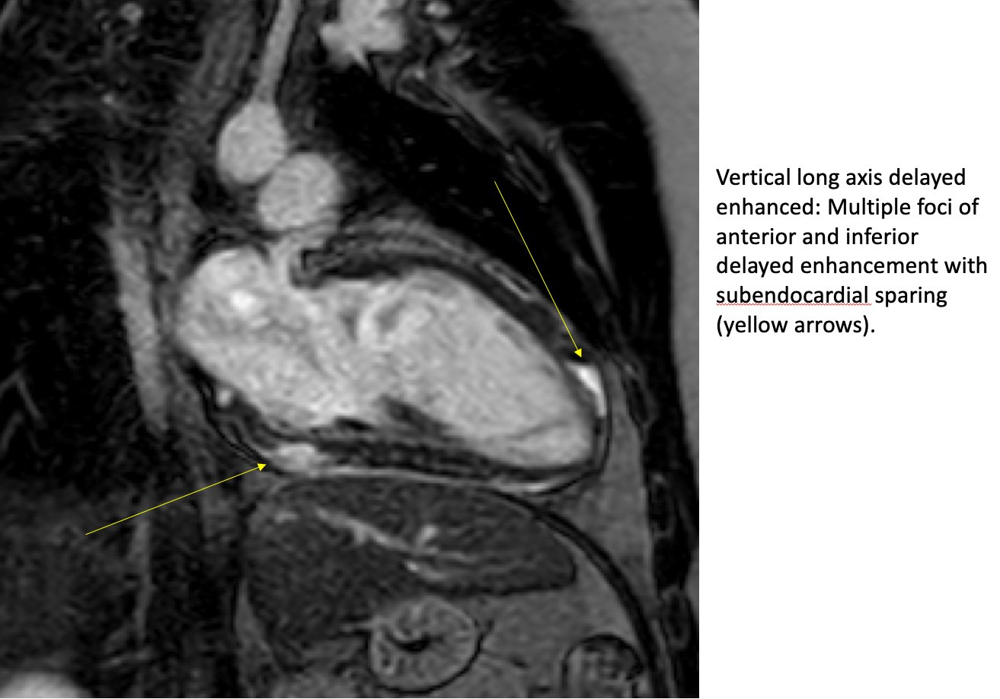
Vì có hiện tượng chừa lại lớp dưới nội tâm mạc (subendocardial sparing), đây không thể là nhồi máu, vì lớp dưới nội tâm mạc là vùng dễ bị tổn thương nhất trong nhồi máu.
Nhận định tổng thể về MRI:
MRI cho thấy chức năng tâm thu thất trái giảm mức độ vừa với phân suất tống máu 36-40%, kèm rối loạn vận động thành khu trú ở đoạn xa vách liên thất và một phần mỏm tim. Có tràn dịch màng ngoài tim lượng ít. Trên hình ảnh ngấm thuốc muộn, có bằng chứng các vùng ngấm thuốc muộn dạng loang lổ, rõ nhất ở cơ tim đoạn xa trước vách và vùng mỏm, cũng như đoạn đáy và đoạn giữa của thành trước bên. Các hình ảnh T2 xóa mỡ cho thấy bằng chứng phù nề và các vùng ngấm thuốc muộn. Cũng có ngấm thuốc màng ngoài tim nhẹ và lan tỏa, tất cả đều phù hợp với viêm cơ-màng ngoài tim dạng loang lổ.
30 giờ

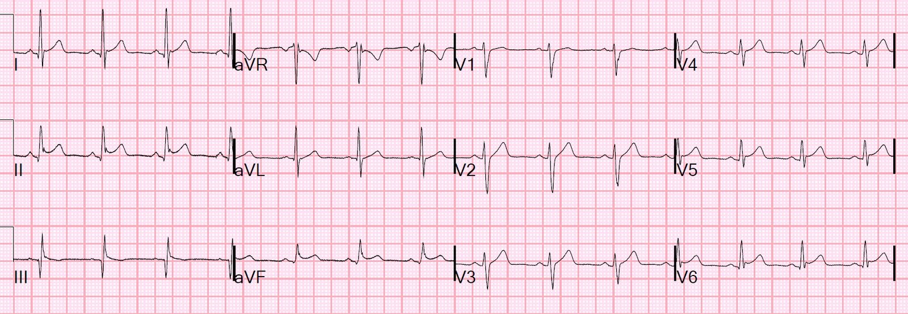
CRP trả về 43.8 mg/L.
Bệnh nhân có xét nghiệm dương tính với enterovirus.
Bình luận:
Nhiều điện tâm đồ trong nhồi máu cơ tim cấp rất gợi ý viêm cơ tim và viêm màng ngoài tim, và bị chẩn đoán nhầm là viêm cơ tim hoặc viêm màng ngoài tim.
Đó là lý do tôi thường viết: “Bạn chẩn đoán viêm màng ngoài tim thì hãy tự chịu rủi ro.”
Ở người trên 30 tuổi, nhồi máu cơ tim có khả năng cao hơn nhiều.
Ở người dưới 20 tuổi, viêm cơ tim có khả năng cao hơn nhiều.
Nhưng người trẻ vẫn có thể bị nhồi máu cơ tim, do bất thường động mạch vành, bóc tách động mạch vành, bệnh Kawasaki, thậm chí nứt vỡ mảng xơ vữa, và các căn nguyên khác.
Khi nói đến tắc mạch vành, bạn không thể chỉ nói: “Ồ, viêm cơ tim có khả năng cao hơn, vì vậy tôi sẽ không thăm dò thêm. Bạn phải CHẮC CHẮN. Vấn đề là rất khó chắc chắn nếu không có chụp mạch vành và/hoặc MRI. Siêu âm tim có thể có rối loạn vận động thành (WMA) trong cả hai trường hợp. Nếu KHÔNG có rối loạn vận động thành, thì đó không phải tắc mạch vành, nhưng nếu CÓ, thì bạn vẫn chưa có chẩn đoán.
MRI mất quá nhiều thời gian.
Chụp mạch vành cho chẩn đoán nhanh.
Chụp CT mạch vành nhanh hơn so với MRI, và có thể đưa ra chẩn đoán.
Như đã nói ở trên, CT phổ với thuốc cản quang thông thường, nếu dương tính, thì khá chính xác đối với thiếu máu cục bộ. Nhưng nó không nhạy.
Dưới đây là một số ca điện tâm đồ viêm cơ tim khác ở người trẻ:
https://drsmithsecgblog.com/2019/06/a-20-something-male-with-acute-chest.html — (Nam thanh niên đau ngực cấp)
https://drsmithsecgblog.com/2017/11/anterior-st-elevation-with-elevated.html — (ST chênh lên thành trước kèm tăng troponin)
https://drsmithsecgblog.com/2017/03/a-young-man-with-sudden-chest-pain.html — (Nam thanh niên đau ngực đột ngột)
https://drsmithsecgblog.com/2014/11/a-young-woman-with-chest-pressure-and.html — (Phụ nữ trẻ có cảm giác đè nặng ngực)
https://drsmithsecgblog.com/2014/06/a-29-year-old-male-with-pleuritic-chest.html — (Nam thanh niên đau ngực kiểu màng phổi)
https://drsmithsecgblog.com/2013/10/inferior-and-lateral-st-elevation.html — (ST chênh lên thành dưới và thành bên)
Trẻ 8 tuổi bị viêm cơ tim:
https://drsmithsecgblog.com/2014/05/an-8-year-old-with-syncope-abdominal.html — (Trẻ nhỏ bị ngất và đau bụng)
Thiếu niên 16 tuổi bị nhồi máu cơ tim cấp:
https://drsmithsecgblog.com/2014/05/a-16-year-old-girl-has-syncope-while.html — (Nữ thiếu niên bị ngất)

===================================
BÌNH LUẬN CỦA TÔI, bởi KEN GRAUER, MD (10/12/2019):
===================================
Đã có một số bài trên Blog của Dr. Smith bàn về chẩn đoán điện tâm đồ: thế nào là và thế nào không phải là Viêm cơ tim cấp (Ví dụ — Bình luận của tôi trong bài ngày 21/7/2019). Ca hôm nay có lẽ là ví dụ tốt nhất về diễn tiến điện tâm đồ qua các lần ghi liên tiếp của thực thể khó nắm bắt này. Thêm vào đó — Dr. Smith bổ sung các hình ảnh MRI có chú thích, mô tả chi tiết dấu hiệu “chừa lại lớp dưới nội tâm mạc” (subendocardial sparing), giúp phân biệt nhồi máu cơ tim cấp với viêm cơ tim.
Để cho rõ ràng — tôi tập trung vào 4 điện tâm đồ liên tiếp được trình bày trong ca này, mà tôi đã ghép lại trong Hình 1.
- Để tham khảo thêm — tôi đưa ra một góc nhìn khác dựa trên cách diễn giải hơi khác một chút của tôi về các bản ghi liên tiếp này.

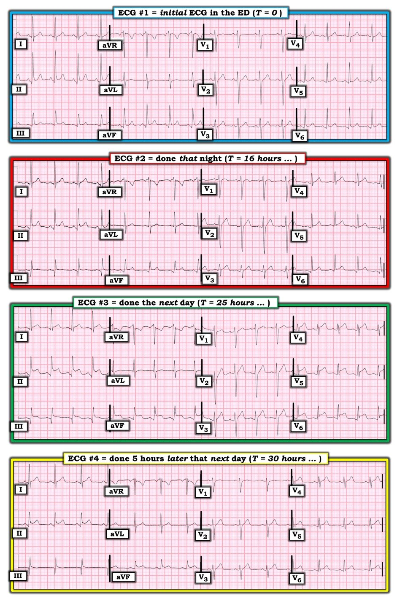
Tôi bắt đầu bằng Cách tiếp cận hệ thống của tôi để diễn giải Điện tâm đồ #1:
Phân tích mô tả điện tâm đồ #1: Nhịp xoang đều với tần số ~95/phút. Tất cả các khoảng (PR/QRS/QTc) đều bình thường — và trục mặt phẳng trán bình thường ở +65 độ. Không có lớn các buồng tim.
- Về Thay đổi Q-R-S-T — Có các sóng Q nhỏ và hẹp ở nhiều chuyển đạo (tức là chuyển đạo I, II, III, aVF — và V5, V6). Tăng tiến sóng R bình thường — với vùng chuyển tiếp (nơi sóng R trở nên cao hơn độ sâu của sóng S) xảy ra bình thường giữa chuyển đạo V3 đến V4.
- Dấu hiệu đáng chú ý nhất trên bản ghi này là có ST chênh lên nhẹ đến vừa ở mỗi chuyển đạo thành dưới (II, III, aVF) — và ở các chuyển đạo ngực bên V5 và V6. Hình dạng của ST chênh lên này là dạng lõm (concave-up) ( = “mặt cười” (smiley)) — và, có khía điểm J ở chuyển đạo V5, cũng như gợi ý trát đậm phần cuối phức bộ QRS ở chuyển đạo II.
- LƯU Ý: Dấu hiệu đoạn PR chênh xuống ở ít nhất vài chuyển đạo, kèm PR chênh lên ở chuyển đạo aVR, là một trong các dấu hiệu điện tâm đồ được liệt kê là phù hợp với viêm màng ngoài tim/viêm cơ tim cấp. Vấn đề mà tôi gặp phải với tiêu chuẩn này (và tôi đã tìm đoạn PR chênh xuống trên hầu như mọi bản ghi mà tôi nghĩ tới viêm màng ngoài tim cấp, trong suốt 30+ năm qua) — là độ nhạy và độ đặc hiệu tổng thể của dấu hiệu này (theo kinh nghiệm của tôi) còn thiếu. Tôi đã thấy đoạn PR chênh xuống ở cả các biến thể bình thường, lẫn ở bệnh nhân nhồi máu cơ tim cấp. Vì vậy tôi thấy dấu hiệu này có ích hạn chế trong hầu hết các trường hợp khi cân nhắc chẩn đoán viêm màng ngoài tim cấp hoặc viêm cơ tim. Tôi không cảm thấy đoạn PR chênh xuống nhẹ ở chuyển đạo II và V5 + PR chênh lên ở chuyển đạo aVR của điện tâm đồ #1 góp phần vào chẩn đoán ( = ý kiến của tôi).
Nhận định lâm sàng của tôi về điện tâm đồ #1: Tôi không nghĩ rằng điện tâm đồ #1, nếu chỉ xét riêng, là đặc biệt điển hình cho viêm màng ngoài tim cấp hay viêm cơ tim cấp.
- ĐIỂM THEN CHỐT (PEARL) #1: Theo tôi, MẤU CHỐT để diễn giải lâm sàng bản ghi này phụ thuộc vào BỆNH SỬ. Phân tích mô tả của chúng ta vẫn như cũ = Nhịp xoang ~95/phút + ST chênh lên nhẹ đến vừa với bề lõm hướng lên ở các chuyển đạo dưới-bên, kèm một số khía/trát đậm điểm J.
Hãy xem xét các Tình huống lâm sàng sau đây:
- Tình huống #1 — NẾU được cho biết điện tâm đồ #1 được ghi ở một người trẻ tuổi không triệu chứng đang được sàng lọc (tức là trong một lần khám sức khỏe trước khi tham gia thể thao — hoặc có thể là một phần của khám sàng lọc tuyển dụng) — tôi sẽ diễn giải điện tâm đồ #1 là một biến thể tái cực bình thường. Là bác sĩ lâm sàng được giao đọc toàn bộ điện tâm đồ ngoại trú cho 35 nhân viên y tế trong suốt 30 năm sự nghiệp làm bác sĩ điều trị chính chuyên khoa y học gia đình — tôi đã gặp rất nhiều bản ghi tương tự trong tình huống lâm sàng này.
- Tình huống #2 — NẾU thay vào đó được cho biết điện tâm đồ #1 được ghi ở một người lớn tuổi hơn bị đau ngực mới khởi phát mà nghe có vẻ do tim — tôi vẫn sẽ nghĩ bản ghi này khó có khả năng phản ánh một biến cố tim cấp vì: i) Các sóng Q đều nhỏ và hẹp, khó có khả năng phản ánh nhồi máu; ii) ST chênh lên ở nhiều vùng giải phẫu — và hình dạng của các đoạn ST này (bề lõm hướng lên = hình “mặt cười”), cùng với một số khía/trát đậm điểm J, gợi ý nhiều hơn đến một biến thể tái cực; và, iii) Không có ST chênh xuống soi gương. Dù vậy, NẾU bệnh sử đau ngực mới này thực sự đáng lo ngại — thì việc có một mức ST chênh lên nhất định cũng đủ để cần đánh giá thêm (tức là ghi lại điện tâm đồ; xét nghiệm troponin nhiều lần; siêu âm tim trong lúc có triệu chứng) cho đến khi có được chẩn đoán chắc chắn hơn.
- Tình huống #3 — NẾU thay vào đó được cho biết điện tâm đồ #1 được ghi ở một thiếu niên nam trước đó khỏe mạnh, bị đánh thức vì đau ngực dữ dội, kiểu màng phổi — xảy ra cùng với ho, sốt, đau cơ gần đây, và chẩn đoán viêm phổi trên CT ( = đây chính là bệnh sử lâm sàng của ca NÀY) — thì Viêm cơ tim cấp cần được cân nhắc hàng đầu trong chẩn đoán phân biệt của bạn, ngay cả TRƯỚC KHI bạn nhìn vào điện tâm đồ! Trong ca này — mặc dù tôi vẫn không nghĩ ( = ý kiến của tôi) rằng điện tâm đồ #1 có giá trị chẩn đoán viêm cơ tim cấp — bản ghi này chắc chắn có thể phản ánh một giai đoạn sớm của viêm cơ tim cấp (hoặc viêm màng ngoài tim-cơ tim).
Điện tâm đồ #2 được ghi vào tối hôm đó ( = 16 giờ sau điện tâm đồ #1). Lúc này — bệnh nhân đã vã mồ hôi, và than đau ngực liên tục mức 9/10. Troponin huyết thanh đã tăng rõ …
Suy nghĩ của tôi khi so sánh điện tâm đồ #2 với điện tâm đồ #1 như sau:
- Mặc dù sóng Q ở chuyển đạo III của điện tâm đồ #2 khá sâu — một sóng Q nhỏ-nhưng-chắc-chắn-có đã được thấy ở chuyển đạo III của điện tâm đồ #1. Các sóng Q nhỏ và hẹp được thấy ở hầu như cùng các chuyển đạo trên cả hai bản ghi. Mặc dù chắc chắn sâu hơn — sóng Q ở chuyển đạo III của điện tâm đồ #2 vẫn hẹp. Ngoài ra — đã có sự dịch chuyển nhẹ của trục (Lưu ý rằng QRS ở chuyển đạo aVL của điện tâm đồ #1 âm nhiều hơn dương — còn ở điện tâm đồ #2, QRS ở aVL rõ ràng dương nhiều hơn) mặt phẳng trán. Vì vậy — tôi không nghĩ sóng Q sâu hơn ở chuyển đạo III của điện tâm đồ #2 có ý nghĩa lâm sàng.
- Nhận thấy rằng có thay đổi nhẹ hình thái QRS ở các chuyển đạo mặt phẳng trán (do sự dịch chuyển trục này) — tôi vẫn nghĩ rằng nhiều khả năng đã có sự gia tăng mức độ ST chênh lên ở chuyển đạo II, aVF, V5 và V6 của điện tâm đồ #2. Với triệu chứng liên tục đang diễn ra (đau ngực) — tôi diễn giải điện tâm đồ #2 là cho thấy sự gia tăng các thay đổi cấp tính.
- Giống như Dr. Smith — tôi cảm thấy bệnh cảnh lâm sàng tổng thể phù hợp nhất với viêm cơ tim cấp.
Điện tâm đồ #3 được ghi vào sáng hôm sau ( = 25 giờ sau điện tâm đồ #1). Đau ngực dữ dội vẫn kéo dài …
- Giống như Dr. Smith nhận xét — đã có sự gia tăng đáng kể mức độ ST chênh lên dưới-bên. Thực tế, ST chênh lên đã trở nên lan tỏa — và hiện có ở tất cả các chuyển đạo trừ aVR, aVL và V1 = một hình ảnh điển hình của viêm màng ngoài tim cấp và/hoặc viêm cơ-màng ngoài tim.
- Có điểm J và ST chênh xuống ở chuyển đạo aVR — mà, trong bối cảnh ST chênh lên lan tỏa ở hầu hết các chuyển đạo khác — là một “thay đổi soi gương” điển hình của viêm cơ-màng ngoài tim cấp.
- Các sóng Q không thay đổi so với điện tâm đồ #2.
- Giống như Dr. Smith nhận xét — đoạn PR chênh xuống đã trở nên rõ ràng hơn nhiều, và hiện có ở hầu như tất cả các chuyển đạo trừ aVR, aVL và V1. PR chênh lên rõ rệt vẫn tồn tại ở aVR. Với đoạn PR chênh xuống lan tỏa này, đi kèm đoạn ST chênh lên lan tỏa — bản ghi này là một trong số ít trường hợp mà tôi đồng ý rằng đoạn PR chênh xuống ở điện tâm đồ #3 rõ ràng ủng hộ chẩn đoán viêm cơ tim cấp của chúng ta.
Điện tâm đồ #4 được ghi muộn hơn trong cùng ngày hôm đó ( = 30 giờ sau điện tâm đồ #1).
- Rõ ràng hình ảnh điện tâm đồ của bản ghi cuối cùng này đã cải thiện. Dù vậy — điểm J và ST chênh lên vẫn còn ở nhiều chuyển đạo (tức là chuyển đạo I, II, aVF; V4, V5, V6). Đoạn PR chênh xuống rõ ràng đã giảm. Các sóng Q vẫn còn.
BÌNH LUẬN CUỐI CÙNG: Tôi thấy ca này đáng chú ý ở cách các thay đổi điện tâm đồ qua các lần ghi liên tiếp bộc lộ một cách sâu sắc khi ca viêm cơ tim cấp này tiến triển.
- Sẽ rất thú vị nếu được xem một điện tâm đồ nền thực sự của bệnh nhân này — để chúng ta có thể biết bao nhiêu phần của mức ST chênh lên vừa phải, dạng lõm ở điện tâm đồ #1 là điện tâm đồ nền của bệnh nhân so với một thay đổi cấp tính sớm của viêm cơ tim cấp sắp tiến triển.
- ĐIỂM THEN CHỐT (PEARL) #2: Một trong những cách TỐT NHẤT để MÀI GIŨA kỹ năng đọc điện tâm đồ của bạn — là QUAY LẠI sau khi bạn đã biết chẩn đoán — và xem lại các bản ghi liên tiếp để xem liệu giờ đây bạn có nhận ra được những thay đổi tinh tế đã bị bỏ sót ở lần đọc ban đầu hay không. Làm như vậy — Giờ đây BẠN có đồng ý không rằng điện tâm đồ #2 cho thấy sự gia tăng tinh tế nhưng tổng thể về mức độ ST chênh lên so với điện tâm đồ #1? (Hình 2).

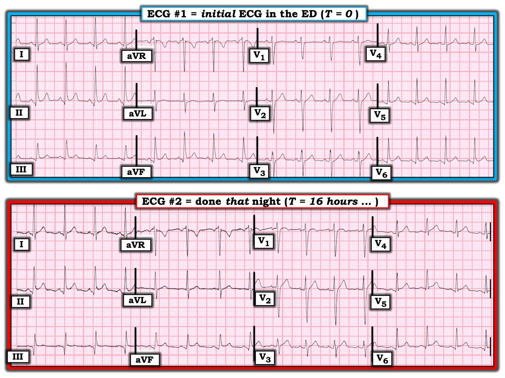
Chúng tôi xin CẢM ƠN Dr. Smith vì đã trình bày ca bệnh minh họa này!